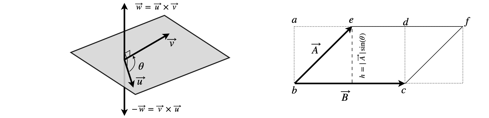
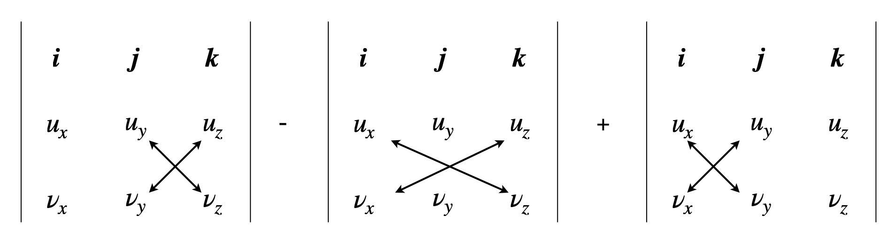
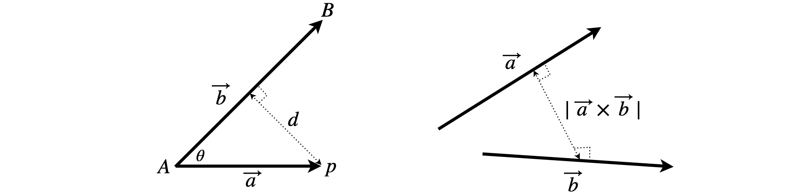
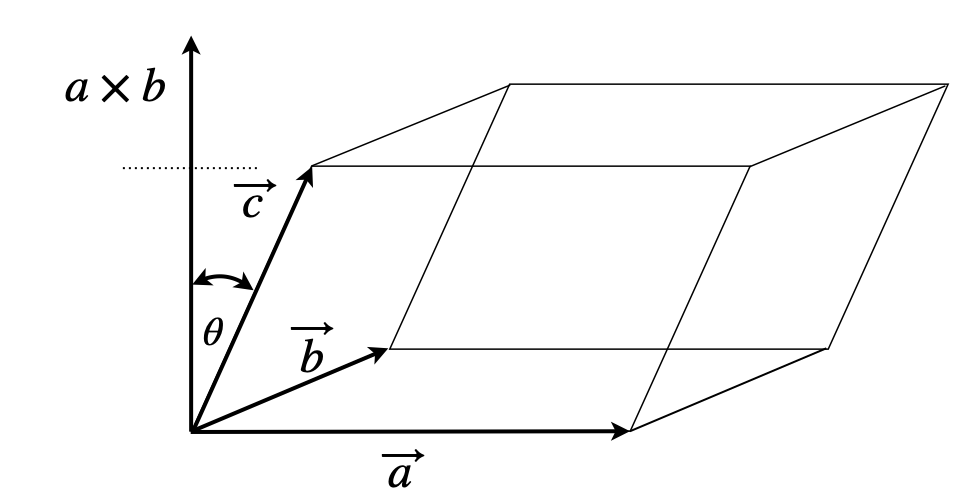

15 Cross product or vector product
Contents
15 Cross product or vector product#
# import all python add-ons etc that will be needed later on
%matplotlib inline
import numpy as np
import matplotlib.pyplot as plt
from sympy import *
init_printing() # allows printing of SymPy results in typeset maths format
plt.rcParams.update({'font.size': 16}) # set font size for plots
15 Cross product or vector product#
The cross product of two vectors produces a vector rather than a scalar. This vector is at right angles to the other two; consequently, the cross product is unique to vectors in three- dimensional space. The symbol \(\times\) is used to indicate a cross product; some authors use \(\land \) although this less is common nowadays.
If \(\vec u\) and \(\vec v\) are two vectors at an angle \(\theta\) to one another, the cross product is
where \(\vec n\) is a unit vector at right angles to \(\vec u\) and \(\vec v\), and shows that the result is a vector. It is not at all obvious why the cross product produces a vector; the product \(|\vec u||\vec v|\sin(\theta)\) is a scalar quantity, i.e. a simple number possibly with units, but mathematically \(\vec u \times \vec v\) behaves like a vector perpendicular to the plane containing \(\vec u\) and \(\vec v\), and hence we multiply by \(\vec n\). It is easy to forget to do this. Because the cross product of a vector is perpendicular to either vector, the cross product of any vector with itself is always zero \(\vec u \times \vec u = 0\).
The magnitude or absolute value of the resultant vector is a scalar;
The cross product is anti-commutative , which means that
and this is shown in figure 32 where the two resultant vectors point in opposite directions. Calculating the numerical value of a cross product can only be done by expanding the vectors in the basis set as components of unit vectors \(i, j, k\), or a column or row vectors of the components.
Relationships between combinations of dot and cross products can be calculated symbolically; for example, the expression \(| \vec A \times \vec B |^2 + | \vec A\cdot \vec B |^2\) can be expanded using the definition of the cross and dot products.
and in the last step \(\sin^2(\theta) + \cos^2(\theta) = 1\) is used. It is not surprising that this result is a number because the dot product is always a number and so is the absolute value of the cross product.
As a second example let us calculate \((\vec A + \vec B) \times (\vec A - \vec B)\) if A and B are vectors. Expanding the multiplication but keeping the order of the terms the same gives
and using the definition of cross products, \(A \times A = B \times B = 0\), gives
because \(-\vec A \times \vec B = \vec B \times \vec A\).

Left Figure 32. Right figure 33. Left. Definition of cross products \(\vec u \times \vec v\) and \(\vec v \times \vec u\). Notice that \(\vec u\) and \(\vec v\) are in the same plane and that the two resultant vectors point in opposite directions. Notice also the relative orientation of the vectors. Right. Parallelogram.
The area of the parallelogram with sides of length \(A\) and \(B\) is \(AB\sin(\theta)\), where \(\theta\) is the enclosed angle. A parallelogram is shown in figure 33. The strategy used to prove this result is to calculate the area of the rectangle \(abcd\) and to convince yourself that this is the same as the area of the parallelogram by moving triangle \( cdf\) onto \(abe\).
By definition, \(\sin(\theta) = opposite/hypotenuse\), therefore the height of the rectangle \(h = |\vec A|\sin(\theta)\) and, as the area of the rectangle is \(h|\vec B|\), it follows that the area of the parallelogram is \(| \vec A ||\vec B | \sin(\theta) \equiv | \vec A \times \vec B |\) and the last identity follows by definition. The area of any triangle with sides \(A\) and \(B\) and enclosed angle \(\theta\) is therefore
This relationship can be understood by realizing that the area of triangle \(bce\) is half that of the rectangle. To calculate the area of a triangle we need to use a basis set and this is done next.
15.1 Cross products using the i j k basis set#
Returning to equation 38 we can see that the cross product of two vectors can be zero; \(\vec A \times \vec B = 0\) even when neither \(\vec A\) nor \(\vec B\) are zero because the angle between them is zero. It is clear that, if \(\vec A\) and \(\vec B\) are parallel to one another the angle between them being zero, \(\sin(0) = 0\); the same is true if the vectors are anti-parallel because \(\sin(180^\text{o}) = 0\), see figure 32.
In the description of dot products we used the right-angled unit vector (orthonormal) basis set \((i, j, k)\) to describe each vector, and found that in some circumstances calculations were more easily performed in this way. Naturally, we can do the same for the vectors here but we have to learn the rules for calculating cross products of the unit vectors.
The rules are easy to remember as the indices rotate about the equations always being in the order,\(i \to j \to k\); $\(\displaystyle \boldsymbol i \times \boldsymbol j = \boldsymbol k, \boldsymbol k \times \boldsymbol i = \boldsymbol j, \boldsymbol j \times \boldsymbol k = \boldsymbol i\)$
Additionally, we use the rule that the cross product of any vector with itself is zero, for example \(\boldsymbol \times \boldsymbol i = 0\) because \(\sin(0) = 0\). Notice also the effect of reversing the order, for example \(\boldsymbol j \times \boldsymbol k = -\boldsymbol k \times \boldsymbol j = \boldsymbol i\) as the vectors are anti-commutative. With this in mind, if a vector is defined in the usual way as
where \(u_x, u_y, u_z\) are the amounts of \(\boldsymbol i, \boldsymbol j, \boldsymbol k\) respectively in the vector, then
where the last equality is a determinant and is by far the simplest way of remembering the cross product. Determinants are described in more detail in Chapter 7 and multiplication illustrated in Chapter 7.2.2. In the multiplication, notice that the second (middle) term
is pre-multiplied by \(-1\) and the first term starts at the top left of the four terms to be multiplied.

The area of any triangle, such as in figure 33, can now be found. Suppose a triangle is enclosed by three vertices \((2, -1, 6), (8, 3, 10), (10, -2, 16)\). To calculate the area, make the triangle’s sides into vectors and calculate half the absolute value of the cross product. The \((i, j, k)\) basis set should be used. Three vectors \(\vec a, \vec b, \vec c\) will form a triangle if \(\vec a +\vec b + \vec c = 0\). Using the coordinates, let \(\vec a\) be the difference between the first and second \(\vec a=(8-2)\boldsymbol i+(3+1)\boldsymbol j+(10-6)\boldsymbol k\), \(\vec b\) the difference between the first and third \(\vec b=8\boldsymbol i-\boldsymbol j+10\boldsymbol k\), and then \(\vec c = -14\boldsymbol i - 7\boldsymbol j - 14\boldsymbol k\) although it is not needed. The vectors must form a triangle unless they lie on the same straight line, in which case the area would be zero. The cross product is
and the area is
15.2 Cross product with a vector basis set#
If a basis set of vectors such as \((1, 0, 0), (0, 1, 0), (0, 0, 1)\) is used instead of \((i, j, k)\) then the cross product is written slightly differently. If the vectors are \(\vec v = \begin{bmatrix}3& 2 &5\end{bmatrix}\) and \(\vec u = \begin{bmatrix}4 &3& 6\end{bmatrix}\) the cross product determinant gives the vector
where the determinant multiplication is performed in the normal way. The length of the vector is its absolute value, which is \(14\).
15.3 Distance from a point to a line and between two skew lines#
Cross products are useful in calculating the distance between a point and a line or plane and between two skew lines; a calculation that is very hard to do with coordinate geometry. If \(p\) is our victim point, figure 34, and a line goes from point \(A \to B\), then the perpendicular (shortest) distance is \(d\). The cross product of vector \(\vec a\) with \(\vec b \) is \(\vec a \times \vec b = | \vec a || \vec b |\sin(\theta)\vec n\), where \(\vec n\) is a unit vector. The magnitude of this cross product is \(|\vec a \times \vec b| = |\vec a||\vec b|\sin(\theta)\) but by trigonometry, \(\sin(\theta) = d/a\) where \(a\) is the length of \(\vec a\) or \(a = |\vec a|\), then
Notice that the length of the line AB, which is \(b\), goes into the denominator.

Figure 34. Left: Distance \(d\) of point \(p\) from line \(A-B\). Right: Distance between two skew lines represented in three dimensions as vectors \(\vec a\) and \(\vec b\).
Suppose that two points on the same line have coordinates \(A = (1, -2, 3), B = (4, 6, 0)\) and another point \(p\), which is not on the line, has coordinates \(p = (1, 2, 3)\). The length \(b\) is \(b=|\vec b|= 9+64+9 =\sqrt{82}\) and is that of vector \(\vec A\) to \(\vec B\) making \(\vec b=\begin{bmatrix}3& 8 &-3\end{bmatrix}\). Alternatively, \(\vec b = 3\boldsymbol i + 8\boldsymbol j - 3\boldsymbol k\). The cross product of the vectors \(\vec b\) and \(\vec a\) is
and the magnitude of this vector is \(12\sqrt{2}\). The distance of \(p\) from the line \(AB\) is therefore \(\displaystyle \frac{12\sqrt{2}}{\sqrt{82}}=\frac{12}{\sqrt{41}}\). The calculation in python is shown below,
# Algorithm 6.2 Perpendicular distance from point p to line AB
A = np.array([1,-2,3])
B = np.array([4,6,0])
p = np.array([1,2,3])
b = B - A
a = p - A
ab= np.cross(a,b)
d = np.sqrt(np.dot(ab,ab))/np.sqrt(np.dot(b,b))
print('{:s} {:s} {:s} {:8.3f}'.format('cross product=', str(ab),' distance = ',d) )
cross product= [-12 0 -12] distance = 1.874
Skew lines are straight lines in three dimensions that do not cross because they are displaced from one another. Aircraft trajectories generally follow skew lines, the closest distance of approach permitted is approximately 3 miles. This distance is the absolute value of the cross product of the two vectors defining the trajectories because the shortest approach vector is at right angles to both trajectories, as shown in figure 34.
15.4 Equation of a plane and distance from a point to a plane#
Often when studying molecules, the distance of an atom to the bond formed by two other atoms, or to the plane formed by several others, is an important quantity; for example, to calculate the \(\pi\pi\) interaction between an atom and an aromatic ring or double bond. In X-ray crystallography, the distance from the origin to planes of atoms generating the diffraction pattern defines the distances used to make the reciprocal lattice.
The calculation is in two parts. The plane has to be defined, then the distance above the plane to any point such as \(P\) has to be found. This distance is the projection of the positional vector \(\vec p\) on the vector \(\vec n\), which is perpendicular to the plane. The points and vectors are shown in figure 35. Three points, such as \(S, R\), and \(Q\), define a plane, provided they are not on the same straight line, and the cross product of the two vectors \(\vec s\) and \(\vec r\) defines a vector \(\vec n\) that is perpendicular to the plane,
Figure 35. vectors used in calculating the distance from a point \(P\) to a plane.
where \(a, b, c\) are the coefficients of \(\vec n\). These are found by evaluating the cross product as a determinant. Point \(T\) is any point in the plane we choose with coordinates \(T = (x_0, y_0, z_0)\) and the equation of the plane is, by definition,
with \(a, b\), and \(c\) being the coefficients of \(\vec n\) . Recasting this equation in vector form it becomes rather neat and is
where \(\vec X\) is the vector to any point \((x, y, z)\) and \(\vec T\) the vector to point \(T\) which must be in the plane. Because \(T\) is not unique, it can be any other point such as one of the points, \(S, R\), or \(Q\) that define the plane, and is therefore known. The length of the projection \(d\) of the vector \(\vec p\) on to \(\vec n\) is from equation 15,
because the vector \(\vec p\) joins point \(T\) to \(P\). This equation can be solved because the coefficients of \(\vec n\) are known via the cross product equation 43 and because points defining vectors \(\vec s\) and \(\vec r\) are known. Vector \(\vec p\) is known (see figure 35) because \(T\) can be any point such as \(S, R,Q\) and \(P\) is known because this is the point whose distance above the plane is sought. If point \(P\) has coordinates \(p_x, p_y, p_z)\) and \(T\) has \((t_x, t_y, t_z)\) substituting the values into equation 45 gives the formula for the distance of \(P\) from the plane.
In the special case that the point \(T\) is at the origin, then the plane passes through the origin and the perpendicular distance to \(P\) is therefore
Conversely, point \(P\) could be placed at the origin and \(p_x\) etc. made zero. In either case, the resulting distance could be negative or positive; if you are not interested in whether the point is above or below the plane then the absolute value of the distance is what you will want. If you want to determine which side of a molecule another atom is, then the sign of the distance may help you determine this, but in this case there is no up or down so the sign on the distance really means the ‘same side’ or ‘opposite side’.

Figure 36. Calculating the perpendicular distance from an atom to the plane.
As an example, suppose that you need to know the distance from the oxygen on the phosphate to the plane of the ring defined as atoms C2, O4, and C3 in the ribose phosphate shown in figure 36. The coordinates are known from the crystal structure and are
To use the method described above, let points \(S, R\), and \(Q\) represent atoms \(O_4, C_3\), and \(C_2\) respectively, which will define the plane, see figure 36. Let \(P\) be atom \(O_2P\) which is not in the plane and the vector \(\vec n\) is then \(\vec n = (\vec S - \vec R) \times (\vec Q - \vec R)\). Any point in the plane can be chosen to be \(T\), see figure 35,36, so it might as well be \(C_3\) or point \(R\). The equation of the plane is then \(\vec n\cdot(\vec X - \vec T)\) where \(\vec X\) is any point \((x, y, z)\) and the result is an equation in \(x, y\) and \(z\). Next, choose any point in the plane; \(T\) can be used again making length of the normal from the plane to \(P\),
#Algorithm 3 Distance from a point to a plane
P = np.array([ 115.394, 41.169, 129.137 ]) # O2P xyz coordinates in angstrom
S = np.array([ 120.546, 41.818, 127.822 ]) # O4
R = np.array([ 119.237, 43.428, 126.672 ]) # C3
Q = np.array([ 119.664, 42.262, 125.771 ]) # C2
n = np.cross((S-R),(Q-R) ) # n is normal vector
T = np.array([ R[0], R[1], R[2]]) # define a point in the plane, any will do
d = np.abs(np.dot(n,(P-T)))/np.sqrt(np.dot(n,n))
print('{:s} {:s}\n {:s} {:6.3f}{:s}'.format(' normal vector n =',str(n),
'O2P distance to plane O4-C2-C3 = ',d/10,' nm') )
normal vector n = [ 2.79151 1.670459 -0.838824]
O2P distance to plane O4-C2-C3 = 0.493 nm
# now get eqn of plane using sympy
x,y,z = symbols('x,y,z') # use sympy as x,y,z are symbolic
X = np.array([x,y,z])
np.dot(n,(X-T)) # equation of plane
15.5 Plane defined by its intercepts#
The distance from the origin to a plane is given by equation 47 but in the special case that the intercepts \(a, b, c\) are known, and the plane goes through the points \((a, 0 0), (0, b, 0),(0, 0, c)\), the equation is
The equation for the perpendicular (shortest) distance from the origin to the plane is
and only applies when the plane is defined by its intercepts; notice that the intercept values only are used. This equation is particularly useful in crystallography to calculate the reciprocal lattice distance from the origin, and hence the inter-lattice spacing of crystals with orthorhombic (orthogonal) axes.
15.6 Best plane through a set of points#
In haemoglobin, the porphyrin has four N atoms roughly, but not exactly, in a plane surrounding the Fe, and similarly in chlorophyll-containing proteins found in photosynthetic organisms, the four N atoms surround the Mg. We often need to know how far an atom is from the plane of another molecule. A plane is determined by choosing three atoms not four. However, four atoms defining the plane would be more useful and, in this case, a best-fit plane to these four atoms is needed. This plane can be calculated using a matrix method similar to that used to determine moments of inertia, and this is described by least squares in chapter 13. When this plane is found, the equations developed in Sections 16 can be used to find distances.
16 Scalar triple products are numbers#
If \(\vec u, \vec v\), and \(\vec w\) are vectors, the expression \(\vec w\cdot (u \times \vec v)\) or equivalently \(\vec w\cdot (u \times \vec v)\) or \(\vec w\cdot u \times \vec v\) etc. is a triple product Using the results from 16.1 this equates to
This result shows that the triple product is a number, hence the prefix ‘scalar’, because it is the determinant of the coefficients of the vectors and a determinant is equivalent to a number not a vector. It must follow that it does not matter in what order vectors occur in this triple product because the result is a number; \(\vec w\cdot \vec u \times \vec v = \vec u\cdot \vec v \times \vec w\) etc.
One important application of this product is to calculate the volume of a solid body that has the shape of a parallelepiped; this is a prism whose faces are all parallelograms. If the body is right angled and with vectors \(\vec a, \vec b, \vec c\) along its edges, then the determinant is diagonal and its value is \(|abc|\), which is equal to the volume. In figure 36 the area of the base is \(\vec a\times \vec b\) and the volume this area multiplied by the projection of \(\vec c\) into \(\vec a\times\vec b\) which is \(|\vec c|\cos(\theta)\).
If the axes are not orthogonal, such as the \(a, b, c\) unit cell vectors of crystals, then the dot products are neither one nor zero but have to be calculated as described in equation 34 for a monoclinic crystal. Note that the angle defined in the monoclinic crystal is different to that in figure 36a. In general, for a parallelepiped the volume = \(| \vec w\cdot\vec u \times \vec v|\) and the absolute value is used to ensure that this is positive.

figure 36a. Parallelepiped volume is \( (\vec a \times \vec b)\cdot \vec c\).
The triple scalar product is used in the formation of reciprocal lattices used in crystallography. In a crystal, the axes are represented as vectors labelled \(a, b, c\), which need not necessarily be orthogonal; the reciprocal lattices are \(a^*, b^*, c^*\) and are defined so that
whereas all of the ‘cross’ terms are zero, i.e. \(\vec a\cdot\vec b^* = 0\) and so forth. The new reciprocal vectors are
and the triple product denominator is the volume of the unit cell. From these relationships it is easy to see that \(\vec a \cdot \vec a^* = \vec b \cdot \vec b^* = \vec c \cdot \vec c^* = 1\). The vector \(\vec a^*\) is at right angles to the plane of \(b\) and \(c\) and similarly for the other reciprocal basis vectors.
The meaning of a reciprocal lattice can be seen if \(\vec a^*, \vec b^*, \vec c^*\) are calculated for an orthogonal unit cell. The simplest way is to define a basis set in three dimensions and if the unit cell lengths are \(a = 5/2, b = 3/2, c = 2\) then the basis vectors are
The triple product is the determinant
To calculate \(\vec b^*\) the cross product needed is \(\vec c\times \vec a=\begin{vmatrix}1&1&1\\0 &0&2 \\5/2&0&0 \end{vmatrix} =5\) making \(\vec b^*=2/3\) which is the reciprocal of \(b\). A similar result is found for \(\vec a^*\) and \(\vec c^*\).
17 Vector triple product#
The vector triple product is the identity
which is the difference between two vectors \(\vec B\) and \(\vec C\) scaled with a dot product, which is a number. The triple product is therefore a vector, as its name implies. This vector is perpendicular to \(\vec A\) and to \(\vec B \times\vec C\), which means that it lies in the plane of \(\vec B\) and \(\vec C\) and is a linear combination of these vectors.
If the brackets are placed differently then a different vector is obtained \((\vec A \times \vec B) \times \vec C = (\vec A\cdot\vec C)\vec B - (\vec B\cdot\vec C)\vec A\). There are other higher vector products, but you will only infrequently meet them.
One use of the product is to make orthogonal axes. If \(\vec a \equiv x\) then the cross product with any vector \(\vec b\) is perpendicular to this making \(y\equiv \vec a \times \vec b\) and then \(z\) is the cross product with this result, \(\vec a\times (\vec a\times \vec b)\)